12 narzędzi (4 na start), przy nich łącznie 32 odpowiedników z rynku: adres, zrzut z naszego przejścia, co robią i dokąd prowadzą. Czerwone „prowadzi do” oznacza, że wynik kończy się formularzem albo telefonem, zielone, że kończy się koszykiem. Źródło: koncepcja narzędzi z 10.11 na analizach 04–07.11 (ocena 15 narzędzi na telefonie, rekomendacja opiekuna kategorii).
Z 11 narzędzi przechodzonych 04–05.11 żadne nie kończy się koszykiem; ceną z montażem po dotacji kończy tylko BOXT (pompa, UK). NEXBE i Energię Nowej Ery znamy tylko z opisu, więc „jako jedyni” to hipoteza do sprawdzenia, nie hasło reklamowe.
„Jaki magazyn dla Twojego domu?”
Co wpisuje klient:
Dobierz magazyn →
Co robi: Zestaw ze sklepu pasujący do falownika (magazyn, falownik gdy potrzebny, montaż, EMS) z rozpiską, dotacją z minusem dla Twoich kWp i przyciskiem „Dodaj do koszyka · kwota”.
Prowadzi do: koszyk z ceną, treść do nauki, następne narzędzie, następne narzędzie
Zestaw ze sklepu pasujący do falownika (magazyn, falownik gdy potrzebny, montaż, EMS) z rozpiską, dotacją z minusem dla Twoich kWp i przyciskiem „Dodaj do koszyka · kwota”; przed podaniem falownika kwota z etykietą „Przykład” i przycisk „Sprawdź falownik”. Rachunek dziś i z magazynem, jeden zwrot w latach, trzy karty zestawów (N5). Uczciwe „nie”: bez paneli dotacja 0 z powodem; słaby zwrot „nie przy tym zestawie”; panele w planach: dotacja po przyłączeniu.
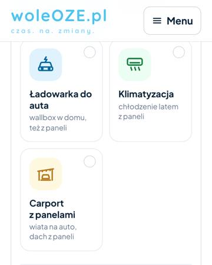
Co robi: jedna strona, pasek z kwotą na żywo, widełki bez produktu i modelu falownika
Prowadzi do: lead (formularz do firm)
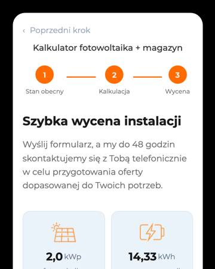
Co robi: rachunek przed i po; „mam PV, chcę magazyn” = „potrzebna konsultacja”
Prowadzi do: lead (cena za formularzem z telefonem)
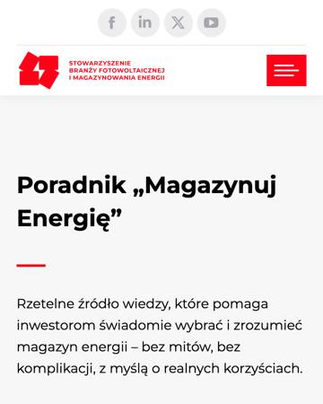
Co robi: pełny raport, profil dobowy, ROI
Prowadzi do: brak akcji po raporcie (formularz pod kotwicą)
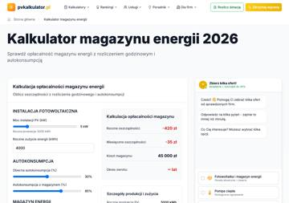
Co robi: domyślny wynik −420 zł/rok, zwrot „∞ lat”
Prowadzi do: lead
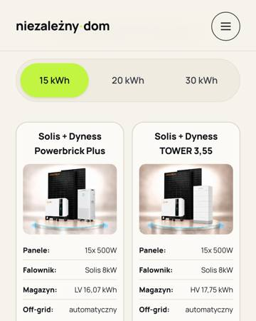
Co robi: ładny, mobilny dobór, drabinka zestawów
Prowadzi do: lead (dokładna cena za formularzem /kontakt)
Co robi: ROI, pojemność, sprawdzenie dotacji, ceny jawne (z opisu, nieprzechodzone)
Prowadzi do: nieustalone
Różnica między nami a rynkiem: Rynek kończy widełkami i formularzem; my konkretnym zestawem pasującym do falownika klienta, z ceną po dotacji i koszykiem, albo powodem, dla którego dziś nie warto.
↑ spis narzędzi„Czy Twój falownik współpracuje z magazynem?”
Co wpisuje klient:
Sprawdź falownik →
Co robi: Werdykt zdaniem: „Hybrydowy, pasuje bez wymiany do N magazynów” z listą i koszykiem.
Prowadzi do: koszyk z ceną, treść do nauki, następne narzędzie
Werdykt zdaniem: „Hybrydowy, pasuje bez wymiany do N magazynów” z listą i koszykiem; „Hybrydowy, zgodności nie potwierdziliśmy” z dwiema drogami (nasz falownik albo zdjęcie i sprawdzenie); „Zwykły: potrzebny falownik hybrydowy” z zestawem; Huawei/SolarEdge z optymalizatorami: „drugi falownik obok obecnego, panele zostają” (podłączenie: wycena po oględzinach); „Nie rozpoznaliśmy modelu”: zdjęcie i „sprawdzimy przed wysyłką”. Echo: fazy, LV/HV, certyfikat do zgłoszenia po 1.01.2027, EMS („sprawdzimy”). „Dobierz pojemność” przenosi do doboru z wpisanym falownikiem.
Co robi: dopasowane zestawy z cenami, głównie Deye i Sofar (z opisu, nieprzechodzone)
Prowadzi do: sklep / koszyk (wg opisu)
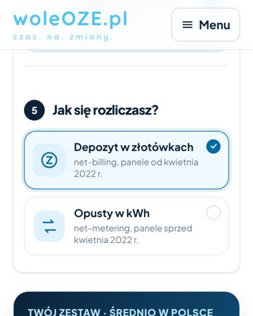
Co robi: nie pyta o model; hybryda zaznaczona z góry; zalecenie wymiany falownika
Prowadzi do: lead (formularz do firm)
Co robi: nie pyta o typ falownika; „mam PV, chcę magazyn” = „potrzebna konsultacja”
Prowadzi do: lead
Co robi: zgodność opisana tekstem, bez interakcji
Prowadzi do: lead (portal)
Co robi: aplikacja doboru i opłacalności, ceny po zalogowaniu (z opisu, nieprzechodzone)
Prowadzi do: B2B / logowanie
Różnica między nami a rynkiem: Nikt w próbie nie bierze modelu klienta i nie odpowiada „pasuje / dołóż / drugi obok” z listą magazynów i koszykiem; jedyny podobny (Energia Nowej Ery) znany tylko z opisu.
↑ spis narzędzi„Ile dotacji PME 2 dostaniesz na magazyn?”
Co wpisuje klient:
Policz dotację →
Co robi: Lista magazynów ze sklepu, każdy z dotacją liczoną dla tego produktu przy Twoich kWp i rozliczeniu, z koszykiem przy każdym. Nad listą zdanie progu: „Dla N kWp dotacja od M kWh”. Magazyn poniżej progu: droga do progu (drugi moduł) z kwotą. Uczciwe „nie”: bez paneli dotacja 0, bo program wymaga przyłączonej mikroinstalacji.
Prowadzi do: koszyk z ceną, treść do nauki, następne narzędzie, stop_z_powodem
Lista magazynów ze sklepu, każdy z dotacją liczoną dla tego produktu przy Twoich kWp i rozliczeniu, z koszykiem przy każdym. Nad listą zdanie progu: „Dla N kWp dotacja od M kWh”. Magazyn poniżej progu: droga do progu (drugi moduł) z kwotą. Uczciwe „nie”: bez paneli dotacja 0, bo program wymaga przyłączonej mikroinstalacji; w planach: dotacja po przyłączeniu paneli. EMS i falownik nie wchodzą do podstawy dotacji.
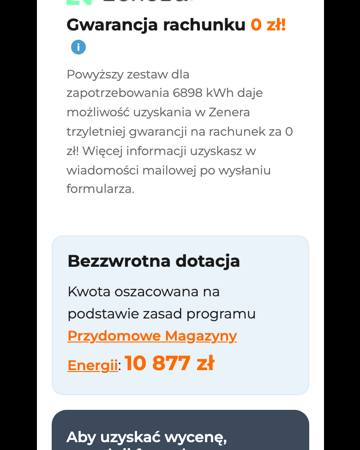
Co robi: blok dotacji w kalkulatorze
Prowadzi do: lead (kwota po formularzu)
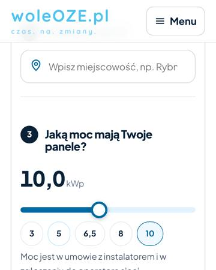
Co robi: pojemność z progu PME 2; cena przed dotacją obok zwrotu po dotacji
Prowadzi do: lead (formularz do firm)
Co robi: sprawdza możliwość dofinansowania; wniosek za klienta (z opisu, nieprzechodzone)
Prowadzi do: nieustalone
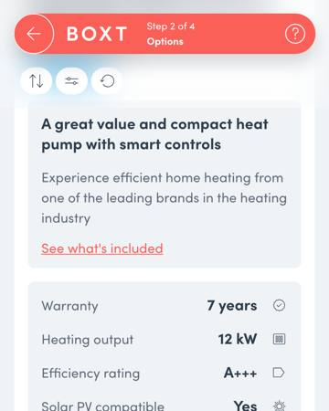
Co robi: 17 pytań, na końcu stała cena z montażem po dotacji
Prowadzi do: cena i zakup; e-mail opcjonalny
Różnica między nami a rynkiem: Rynek liczy dotację ogólnie i chowa kwotę za formularzem; my liczymy ją dla każdego magazynu w sklepie przy Twoich kWp, z powodem, gdy się nie należy, i z koszykiem.
↑ spis narzędzi„Mniejszy, polecany czy większy zestaw?”
Co wpisuje klient:
Porównaj zestawy →
Co robi: 2–3 zestawy jako karty na jednej mierze: do zapłaty, dotacja dla tego zestawu, po zwrocie, oszczędność rocznie, zwrot.
Prowadzi do: koszyk z ceną
2–3 zestawy jako karty na jednej mierze: do zapłaty, dotacja dla tego zestawu, po zwrocie, oszczędność rocznie, zwrot; przy mniejszym droga do progu dotacji; koszyk przy każdej karcie. Uczciwe „nie” dla większego, gdy dach go nie naładuje.
Co robi: drabinka dobry–lepszy–najlepszy
Prowadzi do: lead (cena za formularzem)
Co robi: drabinka zwrotu w raporcie
Prowadzi do: brak akcji
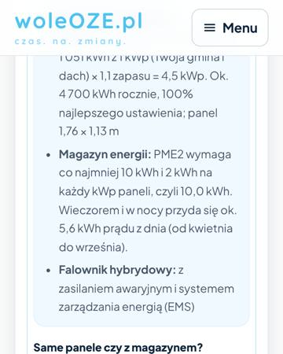
Co robi: porównanie „same panele / z magazynem”
Prowadzi do: lead
Co robi: 10 vs 35 kWh (BEST_PRACTICE, nieprzechodzone)
Prowadzi do: nieustalone
Różnica między nami a rynkiem: Rynek porównuje warianty bez produktu; my zestawy z naszej półki z jedną ceną i koszykiem przy każdym.
↑ spis narzędzi„Na ile godzin wystarczy magazyn, gdy zgaśnie sieć?”
Co wpisuje klient:
Policz godziny →
Co robi: Godziny dla każdego magazynu w sklepie z koszykiem.
Prowadzi do: koszyk z ceną, następne narzędzie
Godziny dla każdego magazynu w sklepie z koszykiem; odwrotnie: ile kWh na wybrany czas. Gdy suma mocy przekracza moc awaryjną falownika: zdanie, że urządzenia nie zadziałają razem. Warunek zawsze widoczny: falownik z pracą wyspową i wydzielone obwody (podłączenie: wycena po oględzinach, poza dotacją). Bez pracy wyspowej: przejście do sprawdzenia falownika.
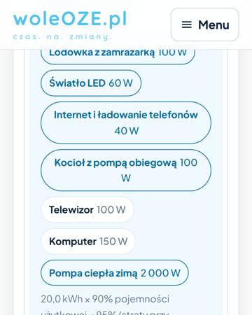
Co robi: chipy urządzeń przeliczają godziny na żywo
Prowadzi do: lead (formularz do firm)
Co robi: wzór pojemność = moc × czas (tekst)
Prowadzi do: treść
Różnica między nami a rynkiem: woleOZE liczy godziny dla abstrakcyjnego magazynu; my dla każdego magazynu na półce, z limitem mocy Twojego falownika i z koszykiem.
↑ spis narzędzi„Który magazyn wybrać?”
Co wpisuje klient:
Porównaj →
Co robi: Karty obok siebie z polami strukturalnymi (pojemność, moc, LV/HV, wymiary tylko przy zgodności modułów, gwarancja, falowniki ze sklepu, cena za kWh, dotacja dla tego magazynu).
Prowadzi do: koszyk z ceną
Karty obok siebie z polami strukturalnymi (pojemność, moc, LV/HV, wymiary tylko przy zgodności modułów, gwarancja, falowniki ze sklepu, cena za kWh, dotacja dla tego magazynu); koszyk przy każdym; pole z niejednolitą odpowiedzią znika.
Co robi: wzór przycisku na kaflu (galeria 05.11, nie przejście)
Prowadzi do: nieustalone
Co robi: rankingi i ceny orientacyjne marek bez montażu
Prowadzi do: lead
Różnica między nami a rynkiem: Rynek robi rankingi tekstem i kończy leadem; my porównujemy produkty z półki tymi samymi polami i kończymy koszykiem.
↑ spis narzędzi„Ile kosztuje montaż u Ciebie?”
Co wpisuje klient:
Sprawdź montaż →
Co robi: Cena montażu z cennika z datą, termin, co jest w cenie.
Prowadzi do: koszyk z ceną, treść do nauki
Cena montażu z cennika z datą, termin, co jest w cenie; zestaw z koszykiem.
Co robi: kod pocztowy i adres domowy; antywzór
Prowadzi do: cena po wizycie technika
Co robi: opcja montażu z ceną w bloku zakupu (BEST_PRACTICE)
Prowadzi do: koszyk
Co robi: jawna cena zestawu, bez narzędzia
Prowadzi do: koszyk
Różnica między nami a rynkiem: Rynek podaje cenę montażu po wizycie albo wcale; my z cennika z datą przed zakupem.
↑ spis narzędzi„Czy cena z Twojej oferty jest uczciwa?”
Co wpisuje klient:
Porównaj ofertę →
Co robi: Nasza rozpiska dla tej samej pojemności pozycja po pozycji, zestaw z koszykiem.
Prowadzi do: koszyk z ceną, stop_z_powodem
Nasza rozpiska dla tej samej pojemności pozycja po pozycji, zestaw z koszykiem; uczciwe „zostań przy swojej ofercie”, gdy jest tańsza za ten sam sprzęt.
Nikt z ocenionych nie ma odpowiednika. To pole bez wzorca w naszym materiale.
Różnica między nami a rynkiem: W przeglądzie 12 graczy nikt tego nie ma; my porównujemy cudzą ofertę z naszą rozpiską i dajemy wybór.
↑ spis narzędzi„Jak Twoje rozliczenie zmienia sens magazynu?”
Co wpisuje klient:
Policz rozliczenie →
Co robi: Ile tracisz na oddawaniu prądu dziś i ile zostaje z magazynem.
Prowadzi do: następne narzędzie, treść do nauki
Ile tracisz na oddawaniu prądu dziś i ile zostaje z magazynem; przejście do doboru z wpisanymi danymi.
Co robi: dwa osobne kalkulatory (lista ze strony głównej 07.11)
Prowadzi do: nieustalone
Co robi: kalkulator cen energii (lista ze strony głównej 07.11)
Prowadzi do: lead
Różnica między nami a rynkiem: Rynek liczy rozliczenie osobno; my kończymy przejściem do doboru konkretnego magazynu.
↑ spis narzędzi„Jaka moc pompy dla Twojego domu?”
Co wpisuje klient:
Dobierz moc →
Co robi: Moc w kW, typ, modele ze sklepu z ceną i koszykiem..
Prowadzi do: koszyk z ceną
Moc w kW, typ, modele ze sklepu z ceną i koszykiem.
Co robi: moc i trzy propozycje z cenami (nieprzechodzone)
Prowadzi do: nieustalone
Co robi: kroki: lokalizacja, wymiary, ściany, ogrzewanie
Prowadzi do: wymaga e-maila
Różnica między nami a rynkiem: Do ustalenia po przejściu GeoPower i cieplo.app.
↑ spis narzędzi„Ile zapłacisz za ogrzewanie pompą zamiast obecnego źródła?”
Co wpisuje klient:
Policz koszt →
Co robi: Roczny koszt pompy wobec obecnego, zwrot, także wynik ujemny..
Prowadzi do: następne narzędzie, treść do nauki
Roczny koszt pompy wobec obecnego, zwrot, także wynik ujemny.
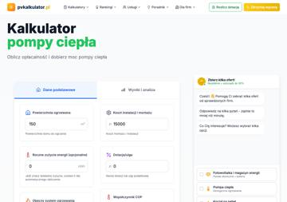
Co robi: krzywa zwrotu, wynik w drugiej zakładce
Prowadzi do: lead (formularz 5 kroków)
Różnica między nami a rynkiem: Do ustalenia.
↑ spis narzędzi„Który poziom dotacji Ci przysługuje?”
Co wpisuje klient:
Policz dotację →
Co robi: Kwota dla wybranej pompy, warunki, moment wniosku (przed realizacją, inaczej niż PME 2)..
Prowadzi do: koszyk z ceną, treść do nauki
Kwota dla wybranej pompy, warunki, moment wniosku (przed realizacją, inaczej niż PME 2).
Nikt z ocenionych nie ma odpowiednika. To pole bez wzorca w naszym materiale.
Różnica między nami a rynkiem: Do ustalenia.
↑ spis narzędzi